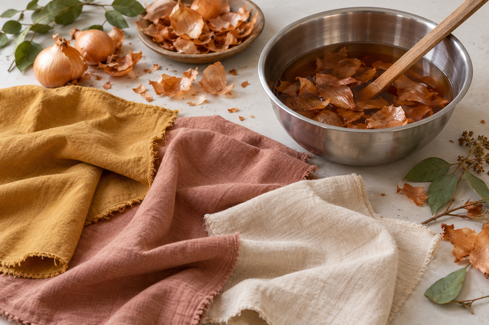

染色工房 稲木
昭和9年開業。埼玉県川越にある東京手描き友禅の工房です。「東京手描き友禅」は工芸の名称です。

非公式デザイン見本2026年10月22〜23日確認の掲載情報をもとにした参考案内です。最新の料金・受付状況・実施条件は公式でご確認ください。
GUIDE 01
昭和9年開業。埼玉県川越にある東京手描き友禅の工房です。「東京手描き友禅」は工芸の名称です。
GUIDE 02
バッグやTシャツなどに染色する体験。約1時間・予約制で、その日に持ち帰れます。2,200円〜（税込・材料代込み）。バッグの大きさで料金が異なります。
真糊の糸目を使う手描き友禅を中心に、草木染めも扱います。2回7,000円〜（税別）、作品により材料代が別途必要。1回約2時間です。
GUIDE 03
午前10時または午後13時開始の案内です。希望日と午前・午後を相談してください。店舗の営業時間とは別の教室時間です。
筆記用具、エプロン、必要に応じて眼鏡。色はねしてもよい服装で。継続教室の案内として掲載しています。
GUIDE 04
氏名・電話番号・希望日・希望する体験を、公式の電話またはメールで伝えます。店舗は10〜12時・13〜17時の案内。店休日と受付状況は公式予定をご確認ください。
利用者向け駐車場はありません。詳しいアクセスは公式ページへ。メールの返信が3日ない場合や急ぎは電話へ。非通知電話には対応しない案内です。
自治体イベント等の染色ワークショップは、場所や日程を相談できます。店頭の型友禅体験とは条件が異なります。
OFFICIAL INFORMATION
希望する内容の詳しい条件と日程は、公式ページへ。この見本では申込・予約・決済を受け付けていません。